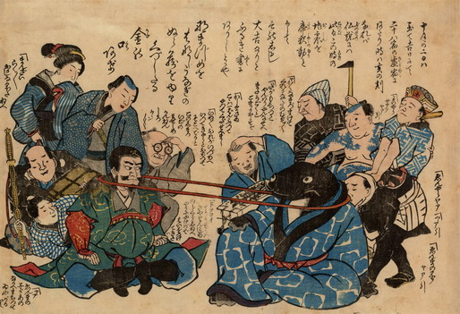

青い着物を着た鯰と鹿島大明神が向かい合って座り、首引をしている。鯰の側では地震でもうけた職人たちが、鹿島神の側では地震で被災した商人や芸者たちが応援している。
出典：親書誌：U426_nichibunken_0203：〔鯰と鹿島大明神の首引；ナマズトカシマダイミョウジンノクビヒキ〕／日付：2010／資源識別子：U426_nichibunken_0203_0001_0000
Copyright (c)2010- International Research Center for Japanese Studies, Kyoto, Japan. All rights reserved.